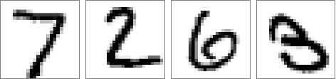
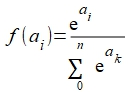
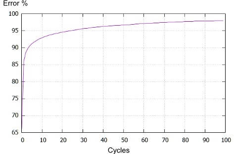

MNIST task
MNIST is a well known benchmark for NN. It consists of a huge image series. Each image is 28x28 pixel wide and monochromatic. The image represents one of ten digit (0-:-9). The purpose is to learn to identify the digit handwritten.
Example of images:

A set of 60000 images and corresponding labels (values of digit) is the training set. Another set of 10000 images can be used for testing trained NN.
In this site there are a lot of informations about MNIST: http://yann.lecun.com/exdb/mnist/
The NN utilized has 784 nodes of input buffer (28 pixel x 28 pixel), 100 hidden nodes and 10 output nodes (one for each label). Because it is a classification task, the output layer activation function is the Softmax function : 
This kind of function normalize the layer nodes output in terms of probability (total probability=1).
Because this huge NN dimension, this test has been implemented on PC. The learn phase consist of 100 repeating cycles of 60000 images submitted to NN (with correct label presented on train buffer). The NN uses the RMSprop error gradient optimizer. No biases are utilized.

After training a further images series is shown to test the generalization ability of the trained NN. This test series is made by 10000 different images of the same type.
The test shows a performance of 96.8% of correct classifications of handwritten digits.